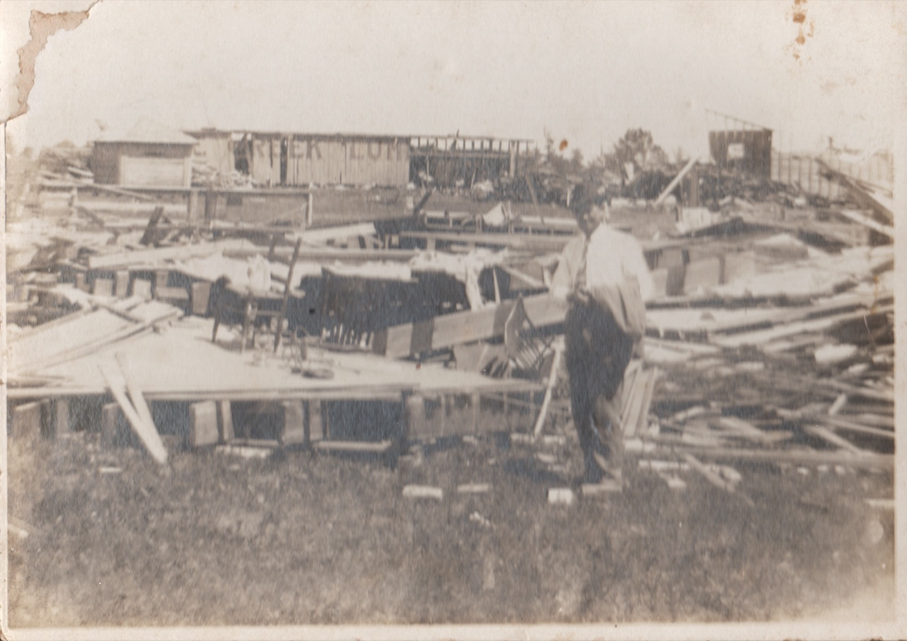

The hotel keeper later said it was over in five seconds.
At 10:10 p.m. on Friday, May 28, 1880, a tornado roughly 178 yards wide dropped out of the North Texas sky and tore through the center of Savoy. It sounded like a train approaching from the west — which was something Savoy now knew well, being a railroad town. But this train never passed.
When it was done, forty houses had been demolished. Every business in town had been destroyed but one — Youree's Dry Goods, in the southwest quadrant, somehow still stood. The post office was gone. The telegraph lines were down. The railroad depot was nearly demolished. McKnight's Drugstore caught fire in the aftermath and might have burned the ruins with the wounded still inside, but a heavy rain followed the cyclone almost immediately and drowned the flames.

Nine people died that night and in the days after. Their names were recorded: Dr. Joseph Kearns. William Sudduth. E.L. Andrews and a child. Sam Gill. Ellie Gallagher. T.J. Cox. Mattie Best. Pantha Johnson. And little Rilla Kerns — thrown forty or fifty yards clear of the wreckage, not found until daylight, brought to the seminary, and dead by the next morning.
"'Twas in the year of 1880 on the 28th of May, that a tornado hit Savoy and blowed it all away." — local verse, preserved in the archive
Word reached Bonham, eleven miles east, only when a train arrived there at 1 a.m. By then the seminary building — the Academy — had already been converted into a hospital. Makeshift beds from bedding hauled out of the debris. Guards at the doors to hold back the curious. By morning, relief engines were running in from Bonham, Sherman, Denison, Bells, and Dodd City, carrying doctors, nurses, food, ice, and medicine. Physicians from Paris, Texas — including Dr. Stell — traveled through the night.

A blacksmith named Mr. Brooks had moved his family out of their house just before the storm, acting on a premonition he couldn't explain, and watched it destroyed from a distance. Mrs. Finnis Horne suffered a fractured femur. Mrs. McKee broke her arm. The estimated two thousand sightseers who arrived the next day were kept back by a rope barrier.
, Vol. 15, No. 23, Ed. 1, Friday, June 4, 1880_1.png)
The Methodist church and the seminary were nearly the only structures left standing. The original church records — the register of infant baptisms, the membership rolls, everything — were lost that night. When a new register was compiled from memory years later, the compiler noted in its margin that the records were "probably in some instances incorrect." The town's paper memory was as damaged as its streets.
The community rebuilt. Main Street had been wiped out; the new commercial district rose on Hayes Street, which is now Highway 82. Within a year or two, wood storefronts were replaced by brick. By 1882, the Bonham News was reporting a thriving town. In 1930, fifty years on, a local poet published a "Cyclone Poem" in the local paper. In 1993, the Bonham Daily Favorite ran a long retrospective. The storm has not been forgotten.
All Tales